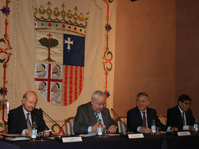
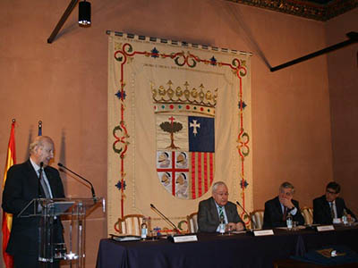
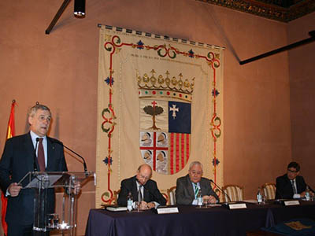

03/04/14 En el Palacio de la Aljafería, el Presidente de las Cortes de Aragón, Excmo. Sr. D. José Ángel Biel, preside el solemne acto en el que el Vicepresidente de la Comisión Europea, responsable de Industria y Emprendimiento, Excmo. Sr. D. Antonio Tajani, recibirá la Insignia de Oro del Real Instituto de Estudios Europeos.
El Comisario Tajani, que ya había recibido en Estrasburgo la Medalla
del Instituto, desarrolla una ejemplar actividad en las áreas de su
competencia, la industria y el emprendimiento, con especial énfasis en las
PYMES.

El Presidente del Real Instituto de Estudios Europeos, Maximiliano
Bernad, realiza el ofrecimiento al Vicepresidente Tajani la insignia de Oro
del Instituto, en un acto celebrado en las Cortes de Aragón.

El Vicepresidente de la Comisión Europea responsable de Industria y
Emprendimiento, Excmo. Sr. D. Antonio Tajani, agradece, en un memorable
discurso, la Insignia de Oro del Real Instituto de Estudios Europeos.
